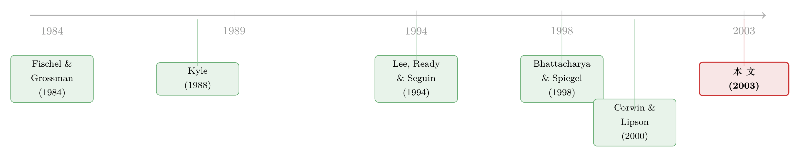

停牌，原来是交易所给「监工」按下的暂停键
本文读的是 Edelen & Gervais (2003, Review of Financial Studies)：当一群专家做市商（specialist）凑成一家交易所，每个人都有动机「宰客」来占便宜，而损失却由整个交易所的声誉来分摊。交易所于是要监督、要罚款——可监督永远不完美。当交易所对某只股票「看不清」到一定程度时，罚款不再能纠偏，反而变成纯粹的死重损失（deadweight loss）。这时候，停牌（trading halt）就成了交易所（或专家本人）按下的那个暂停键。作者用 NYSE 的停牌样本验证了一个新颖的预测：停牌之前，交易所与专家之间的信息不对称会陡然上升。
1 一个被忽略的常识：做市商不是各干各的
我们读了太多市场微观结构的模型，里面的做市商往往是一座孤岛：他面对自己那只股票的订单流，报一个价差，赚一份钱，盈亏自负，和隔壁那只股票的做市商井水不犯河水。
但真实的交易所不是这样运转的。
纽约证券交易所（New York Stock Exchange, NYSE）上，几百个专家做市商挂在同一块招牌底下。一个普通投资者并不会去逐只股票地评估「这只股票的专家靠不靠谱」，他评估的是整个 NYSE 的成交质量。Fischel 和 Grossman (1984) 早就说过这层意思，本文几乎是把那句话直接抄进了模型设定里：
交易所上若存在欺诈，会让所有会员都失去客户；客户会转去那些「防欺诈」声誉更好的交易所。
换句话说，声誉是被一池子专家共享的「公共品」。任何一个专家在自己那只股票上「宰」了客户一刀——比如在执行你的订单之前，先把价格短暂地、人为地往不利方向拖一下（a temporary price fade）——受伤的不只是他自己，而是整个交易所的招牌。
于是一个再自然不过的张力浮出水面：个体专家的私利，和交易所的整体利益，并不一致。这正是一个典型的委托—代理（principal-agent）问题。交易所是委托人，每个专家是代理人。代理人有动机去「污染」那个公共品，而把成本外溢给所有人。
文章想问的是：交易所手里到底有什么工具去管住这群代理人？而那个看似突兀的、谁都见过的制度安排——停牌——在这套治理逻辑里，究竟扮演了什么角色？
2 模型：为什么「合作」注定崩溃
我们先把这套激励讲透，因为这是全文的地基。
考虑一家交易所，上面有 N 只股票，每只由一个专家 i 做市。所有专家风险中性，只追求自己做市业务的期望利润。在某一期，专家 i 只能二选一：报一个保守（conservative）的价格表，记作 \(\tilde{\Theta}_i = G\)（good，对交易所是好的）；或者报一个激进（aggressive）的价格表，记作 \(\tilde{\Theta}_i = B\)（bad）。
- 保守价格表：专家自己期望赚
a > 0，不伤害任何人。 - 激进价格表：专家自己期望赚
2a，但这种「宰客」会给整个交易所带来一个负外部性c，由N个专家平摊，每人分担c/N。
作者施加了一个关键的参数约束（论文的式 (1)）：
$$\frac{c}{N} < a < 2a < c$$
这个不等式是整篇文章的命门，值得逐段拆开看：
c/N < a：单个专家自己分担的那份外部性，小于他保守经营的利润——所以从单人视角看，宰一刀「划算」。2a < c：但激进带来的全部私人收益2a，又小于它给交易所造成的总损失c——所以从整体视角看，宰客是社会性的亏本买卖。
这就是公地悲剧的标准结构：对个人有利，对集体有害。
现在把专家 i 的利润写清楚。它等于他自己的直接做市利润 \(\tilde{\Phi}_i\)，减去其他专家 j 强加给他的外部性 \(\tilde{\Gamma}_{ij}\)：
$$\tilde{\Pi}_i = \tilde{\Phi}_i - \sum_{\substack{j=1 \\ j \neq i}}^{N} \tilde{\Gamma}_{ij}$$
四个条件期望把设定翻译成了数字：
$$E\!\left[\tilde{\Phi}_i \mid \tilde{\Theta}_i = G\right] = a, \qquad E\!\left[\tilde{\Phi}_i \mid \tilde{\Theta}_i = B\right] = 2a - \frac{c}{N}$$ $$E\!\left[\tilde{\Gamma}_{ij} \mid \tilde{\Theta}_j = G\right] = 0, \qquad E\!\left[\tilde{\Gamma}_{ij} \mid \tilde{\Theta}_j = B\right] = \frac{c}{N}$$
接着，一个自然的问题是：专家 i 该怎么选？关键在于，别人怎么报价，他管不着——\(\tilde{\Gamma}_{ij}\) 是别人砸给他的，与他自己的选择无关。所以他只需比较自己激进 vs 保守的直接利润差。这一步是全文最核心的算术，我把它单独拎出来标注：
不等式右边 a − c/N > 0 直接来自约束 (1)。它讲的道理一句话就够：专家只承担了自己制造的外部性的 1/N，剩下的 (N−1)/N 全甩给了同行。N 越大，这种「搭便车」的诱惑越大。
于是结局注定：每个人都选激进。代入均衡，每个专家的期望利润是论文的式 (2)：
$$E\!\left[\tilde{\Pi}_i\right] = 2a - \frac{c}{N} - (N-1)\frac{c}{N} = 2a - c$$
可如果大家都保守呢？那就没有任何外部性，人人拿 a，而由约束 2a < c 可知 a > 2a − c。
所有人都更想要那个 a 的世界，却谁也走不到那里。 这就是公共品的经典困局——没有协调机制，每个专家都忍不住去搭别人善意的便车。问题摆明了：交易所必须设计一套机制，来缓解这个搭便车问题。
3 监督，以及它的「不完美」
最直接的机制是监督加罚款。如果交易所能完美看到每个专家报的是什么价格表，那只要对激进行为开出足够大的罚单，第一优势（first-best）的全员保守就能实现。
但完美监督是天方夜谭。专家坐在每一笔交易的中枢，对自己那只股票的订单流、交易人群、市场状况了如指掌；交易所想复制这套信息集，几乎不可能。现实里，交易所只能靠统计、靠调查去评估专家——它掌握的信息，永远是专家信息的一个真子集。
作者用一个漂亮的简约（reduced-form）设定来刻画这种「看不清」。每期末交易所收到一个关于 \(\tilde{\Theta}_i\) 的信号 \(\tilde{\sigma}_i\)，它的精度 \(\tilde{p}_i \in (0, \tfrac{1}{2})\) 每期独立重抽，且服从 \((0, \tfrac{1}{2})\) 上的均匀分布（论文的式 (3)、(4)）：
$$\tilde{\sigma}_i \mid \{\tilde{\Theta}_i = B\} = \begin{cases} B, & \Pr = \tfrac{1}{2} + \tilde{p}_i \\[4pt] G, & \Pr = \tfrac{1}{2} - \tilde{p}_i \end{cases}$$
$$\tilde{\sigma}_i \mid \{\tilde{\Theta}_i = G\} = \begin{cases} G, & \Pr = \tfrac{1}{2} + \tilde{p}_i \\[4pt] B, & \Pr = \tfrac{1}{2} - \tilde{p}_i \end{cases}$$
读懂这两行就读懂了一半文章：当 \(\tilde{p}_i = \tfrac{1}{2}\)，信号百分百准确，交易所明察秋毫；当 \(\tilde{p}_i = 0\)，信号纯属抛硬币，交易所对错各半，等于全瞎。\(\tilde{p}_i\) 就是交易所与专家之间信息不对称的（反向）度量——注意，这里说的不是关于股票价值的信息不对称，而是关于「专家到底报了哪种价格表」的信息不对称。这个区分，是全文最容易被误读、也最重要的一处。
监督机制怎么运作？交易所一旦观察到 \(\tilde{\sigma}_i = B\)，就罚专家一笔罚款 ψ。由信号结构可知，专家激进时挨罚的概率更高：
$$E\!\left[\tilde{\Psi}_i \mid \tilde{\Theta}_i = B, \tilde{p}_i\right] = \psi\!\left(\tfrac{1}{2} + \tilde{p}_i\right) \;\geq\; \psi\!\left(\tfrac{1}{2} - \tilde{p}_i\right) = E\!\left[\tilde{\Psi}_i \mid \tilde{\Theta}_i = G, \tilde{p}_i\right]$$
激进相对保守，期望多挨的罚是 \(2\psi\tilde{p}_i\)。于是专家被吓住、乖乖保守，当且仅当这份额外惩罚盖得住宰客的私人收益 a − c/N：
$$2\psi\tilde{p}_i \;\geq\; a - \frac{c}{N}$$
到这里，真正关键的一步出现了。注意威慑力 \(2\psi\tilde{p}_i\) 是随精度 \(\tilde{p}_i\) 走的。当交易所对某只股票「看得清」（\(\tilde{p}_i\) 高），罚款有效，专家不敢造次；可当 \(\tilde{p}_i\) 低到一定程度，无论罚款 ψ 定得多高，威慑都顶不住宰客的诱惑——专家照样激进。更糟的是，此时罚款还有个副作用：作者假设上缴的罚金对交易所和专家双方都是死重损失（deadweight loss，因为监督本身要烧钱、罚金无法再分配）。换言之，在 \(\tilde{p}_i\) 极低的「看不清」区间里，罚款既挡不住宰客、又白白烧掉社会福利，变成了一个纯粹的无谓损失。
这正是停牌登场的舞台。
4 反转：停牌是用来「止损」无效监督的
普通的直觉里，停牌是为了「冷静一下」「让信息扩散」「拉平交易者之间的不对称」——作者把这一大类观点统称为公平竞技场假说（level playing-field hypothesis），它关心的是交易者彼此之间的信息差。
本文的反转在于：它讲的根本不是那回事。
本文里，停牌只跟交易所与专家之间那道信息不对称（也就是 \(\tilde{p}_i\)）有关。当交易所预见到某只股票即将进入一个 \(\tilde{p}_i\) 极低的「无解时段」——监督既无效、罚款又是死重损失——它最优的选择不是硬罚，而是直接把交易暂停，把那个谁都不会赢的局面（no-win scenario）从棋盘上抹掉。
这一个机制，恰好能同时解释现实中两类停牌：
- 交易所发起的停牌：当交易所预判某个即将到来的事件或公告会让它「看不清」这只股票时（比如重大消息前夕），它提前停牌，保护全体专家的共同利益，免得某个专家趁乱报出伤害性的激进价格表。
- 专家主动申请的停牌：当监督很可能误伤——也就是专家明明报了高效（保守）的价格表，却仍大概率被罚——他有动机主动「拔插头」，申请停牌，避免无端受罚。（在 NYSE 规则下，只有场内官员能 call 一次停牌，专家只能 solicit，所以作者用「申请」而非「发起」。）
这就解出了一个旧的经验事实：停牌有时由交易所触发、有时由专家请求。Bhattacharya 和 Spiegel (1998) 等人早就记录过这种「双向触发」，但此前的理论文献一直没能给它一个统一的解释。本文的监督模型一口气把两类停牌装进了同一个框架。
于是模型吐出了两个核心的经验预测：
- 停牌应当既有交易所发起、也有专家申请两种来源。
- 停牌之前，应当伴随交易所与专家之间信息不对称的显著上升——再强调一次，是关于「报价是否高效」的不对称，不是关于股票价值的不对称。这是一个全新的、此前文献没人提过的预测。
第二点听起来很美，可它有个致命的实操难题：\(\tilde{p}_i\) 是个谁也看不见的隐变量。你要怎么去测一个连市场参与者自己都说不清的「监督精度」？
5 识别策略：用「估不准的价格冲击」给监督精度做代理
这是全文最见功力的一步。
研究者当然不知道 NYSE 内部到底跑了什么统计程序去评估专家（连专家自己可能都不知道）。但作者给了一个巧妙的桥：交易所的监督，本质上是在用成交、报价、订单流数据，统计地估出一只股票「应有的」价格冲击，再看实际报价偏没偏离这个规范。那么——研究者用同一批数据、做一个简单的价格冲击（price impact）估计，它的统计精度，就能给交易所那套看不见的监督精度当代理变量。
逻辑闭环在于：只要交易所「看不清」的时段，恰好也是我们这把简单尺子「估不准」的时段（两者吃的是同一批数据，这个条件大体成立），那么——
价格冲击估计的统计精度，就是 \(\tilde{p}_i\) 的可观测代理。
（关于「价格冲击/流动性」如何用成交数据来度量，这条思路和 Amihud 的非流动性指标一脉相承，可参见《想买走一家公司千分之一的股票，得把价格推高百分之一》。）
数据上，作者用 NYSE 的停牌记录，配合 TAQ（Trade and Quote） 高频数据，围绕每一次停牌的事件窗口去估价格冲击，再看它的统计精度在停牌前后怎么变。
核心发现干脆利落：价格冲击估计的统计精度，在 NYSE 停牌前后急剧下降，而且这种下降不能被波动率、成交量、或价格冲击本身的水平所完全解释。也就是说，「监督的不确定性」在停牌前的陡升，是一个独立于波动、独立于流动性水平的现象——这正是模型预测的、那个看不见的 \(\tilde{p}_i\) 在塌陷。
6 它和「公平竞技场」那派的正面交锋
值得专门一说的，是本文怎么回应 Lee, Ready and Seguin (1994)（下称 LRS）这篇绕不开的对手。
LRS 的做法是：拿停牌的股票，去和「特征相似、情形相似、但没停牌」的股票比波动率。他们发现，没停牌的股票事后波动率反而更低。如果波动率代理了交易者之间的信息不对称，这个证据其实是不利于公平竞技场假说的——它暗示停牌可能有「反效果」（perverse effects），呼应了 Grossman (1990) 和 Subrahmanyam (1994) 的担忧。
本文的态度很微妙：它既不预测、也不否定传统的公平竞技场假说——两者讲的是不同维度的不对称。但本文指出，监督不确定性（\(\tilde{p}_i\)）很可能和那些波动率、流动性变量相关，所以必须把它们一并塞进回归里厘清。结果是：本文确认了 LRS 的发现——停牌前后波动率确实异常高、流动性确实异常低；但停牌前那份异常的监督不确定性，无法归因于过度波动。
这就反过来质疑了 LRS 的「对照样本」：作者认为，LRS 用相似特征构造出来的非停牌股票，并没有真正复制出停牌时的市场条件。两只股票之所以一个停了、一个没停，恰恰是因为其中一只，交易所的「监督能力」出现了更大的塌陷——而这一维度，是 LRS 的匹配没能捕捉到的。
这里有一个微妙的内生性反转：传统视角把波动率当成停牌的「因」，本文则提示，波动率和停牌可能都是同一个隐变量（监督精度塌陷）的「果」。用相似波动率去匹配，等于在对一个中介变量做控制，反而洗掉了真正决定停牌的那条暗线。
7 文献脉络
把这条线索捋一捋，会发现本文站在两股力量的交汇处。
第一股，是关于交易所自律监管（self-regulation）的世纪辩论。 一派以 Fischel and Grossman (1984)、Kyle (1988)、Mahoney (1997) 为代表，认为交易所有正确的经济激励去自我监管——声誉效应和交易所之间的竞争，会逼着它制定有利于投资者的规则，外部（政府）监管反而添乱。另一派以 Pirrong (1995) 为代表，认为自律不可能高效，主张外部监管。本文的立场最接近 Kyle (1988)——他主张把停牌用作交易所自律的工具——但本文给停牌找的理由，和 Kyle 当年的讨论截然不同：Kyle 讲的是别的机制，本文讲的是「监督失灵时的止损」。本文也和 DeMarzo, Fishman and Hagerty (2000) 关于自律组织如何监督会员的研究相关，但「停牌能增强监督」这个本文的主战场，那几位作者并未触及。
第二股，是关于停牌「成因 vs 后果」的实证传统。 大量早期工作——Hopewell and Schwartz (1978)、Kryzanowski (1979)、King, Pownall and Waymire (1992)、Wu (1998)——研究的都是停牌前后的价格发现（后果）。本文偏偏反其道，专注于停牌的触发因素（causes）。在这个意义上，它最近的同路人是 Lee, Ready and Seguin (1994) 和 Bhattacharya and Spiegel (1998)，但它给出的，是一个相关却不同的「停牌扳机」。再往后，Corwin and Lipson (2000) 细看了停牌前后的订单流与流动性，和本文的事件窗口分析互为补充。

放在这条脉络里看，本文的位置很清晰：它把「公共品 / 团队激励」那套经济学（Pigou 1932、Buchanan 1969、Baumol 1972 的外部性税收，Groves 1973、Holmstrom 1982、Kandel and Lazear 1992 的团队激励），第一次系统地搬进了专家市场的治理问题，并由此长出一个对停牌的全新解释——而且它独有的转折是：允许「监工」或「被监工」任何一方在机制失灵时「拔插头」。
8 评论与延伸（Q&A + 研究方向）
(a) 几个可能的疑问
Q：这模型里的信息不对称，和我们常说的「内幕信息」是一回事吗？
不是，这是全文最容易被误读的地方。常规微观结构里的信息不对称，是交易者之间关于股票价值的差异（谁知道好消息）。本文的 \(\tilde{p}_i\) 是交易所与专家之间关于专家报价是否高效的差异。前者关心「这股票值多少」，后者关心「这专家有没有偷懒宰客」。作者反复强调，股票价值的不对称在他们的理论里不起任何作用。
Q：约束 c/N < a < 2a < c 是不是太凑巧了？换个参数结论就垮了吧？
这个约束确实是结论的命门，但它每一段都有经济含义，并不任意：
c/N < a保证单人有宰客动机，2a < c保证宰客是集体亏本。只要落在这个区间，公地悲剧就成立。真正的脆弱性不在参数本身，而在「二选一」的简化——作者也承认，把价格表的行动空间从两种扩到连续，经济力量大体不变，但严格性会打折。
Q：把「价格冲击估计的统计精度」当成监督精度的代理，可信吗？
这是全文识别的阿喀琉斯之踵。代理成立的前提是「交易所看不清的时段，恰好是简单统计也估不准的时段」。作者的辩护是两者吃同一批数据，所以大体同步。但这毕竟是一个未经直接验证的假设——我们永远无法观测 NYSE 真实的监督算法，因此「精度塌陷 = 监督塌陷」始终停在「合理但未证」的层面。
Q：既然停牌前波动率也高、流动性也低，凭什么说监督不确定性是独立的那一维？
靠的是回归里的「增量解释力」。作者把波动率、成交量、价格冲击水平都放进控制变量后，价格冲击估计精度的下降依然显著。也就是说，这份精度塌陷不是波动率的影子。当然，这只是「无法被这几个变量解释」，不等于「无法被任何遗漏变量解释」。
Q：本文和 Lee, Ready, Seguin (1994) 到底谁对？
与其说谁对，不如说在测不同的东西。本文确认了 LRS 的波动率事实，但质疑其对照样本——因为相似波动率的非停牌股票，未必有相似的「监督塌陷」。两者可以共存：停牌或许既有公平竞技场的考量，也有本文说的监督止损动机。本文的贡献是揭示了后者这条此前没人量过的暗线。
Q：为什么交易所不干脆把罚款 ψ 定到无穷大，一劳永逸吓住所有人？
因为威慑力是 \(2\psi\tilde{p}_i\)，它被精度 \(\tilde{p}_i\) 卡着。当 \(\tilde{p}_i \to 0\)，再大的
ψ乘上去也趋于零威慑，却照样可能误罚高效报价的专家，而罚金是双向死重损失。无限罚款在「看得清」时多余、在「看不清」时无效且有害——停牌正是为了绕开这个死角。
(b) 几个可能的研究问题与提案
1. 把这套「监督止损」逻辑搬到公司债市场的交易暂停 / 报价中断。 - 【经济故事】公司债是 OTC 交易商市场，交易商同样共享一个「场外成交质量」的声誉池，且债券的信息不对称（尤其在评级事件、财报前夕）远比股票剧烈。当交易商对某只债券「看不清」时，是否也会出现类似停牌的报价撤离？ - 【可行性】中。TRACE 提供了债券成交数据，可以构造类似的价格冲击精度代理；难点在于公司债没有正式的「停牌」制度，得用「报价中断 / 流动性枯竭」作为替代事件，识别会更脏。
2. 用外资持有人占比，给「监督精度」找一个外生的横截面变化。 - 【经济故事】外资股东对本地专家 / 交易商的监督能力天然更弱（信息劣势、距离）。如果本文逻辑成立，外资占比高的股票，交易所的有效监督精度应更低，从而停牌 / 流动性枯竭更频繁。 - 【可行性】中。可借助各国「可投资度（investability）」的制度变更做准自然实验，与本博客已有的《外资真有「信息劣势」吗？》等外资交易研究对接。识别关键是找到可投资度的外生跳变。
3. 直接检验「双向触发」：交易所发起 vs 专家申请的停牌，事前信号是否不同。 - 【经济故事】模型预测交易所发起的停牌对应「预判未来看不清」（事件驱动），专家申请的停牌对应「当前会被误罚」（精度已塌）。两类停牌的事前 \(\tilde{p}_i\) 路径理应不同。 - 【可行性】高（若能拿到触发来源标签）。NYSE 停牌记录区分了 call 与 solicit；把两类样本分开，比较各自停牌前价格冲击精度的时间路径，是对模型最直接的一次「分门别类」检验。
4. 监督精度塌陷与做市商库存风险的交互。 - 【经济故事】当专家「看不清」时，他既面临误罚风险，也面临库存风险，两者可能叠加放大停牌动机。把监督不确定性和库存风险一起放进做市商的最优停牌决策，能拆出更细的机制。 - 【可行性】中。可与本博客《「打了就跑」的日内交易者，真的抬高了做市商的价差吗？》和《无风险市场里的风险厌恶》的监督 / 风险限额框架对接，理论上 doable，实证需要交易商层面的库存数据。
我的判断
贡献。 本文最漂亮的地方，是把一个谁都见过、却没人认真理论化的制度——停牌——重新解释成「自律监管在监督失灵时的止损阀门」。它一举做到三件事：给「双向触发」的经验事实一个统一解释；提出一个全新且可检验的预测（停牌前监督不对称陡升）；并用一个聪明的代理（价格冲击估计精度）把一个隐变量拽到了数据里。在一个被「公平竞技场」叙事主导了二十年的领域，这是一次真正换了视角的贡献。
对识别的担忧。 最大的软肋在那个代理假设：「统计估不准 ≈ 交易所监督看不清」。这条桥无法被直接验证，而整篇实证的因果解释都压在它上面。其次，「无法被波动率 / 成交量 / 价格冲击水平解释」只是排除了几个最显眼的混淆项，停牌前夕本就是信息环境剧烈变动的时刻，遗漏变量的空间很大。模型层面，「保守 / 激进」二元行动和「价格表是否高效」与「价格表内容」分离这两处简化，都是为了可解性付出的代价——作者很诚实地承认了这一点。
后续想看到什么。 我最想看的是把「触发来源」标签用足：如果 call 与 solicit 两类停牌在事前监督精度路径上真的分岔，那将是对模型机制最有力的一次确证，远胜于一个笼统的「精度下降」。其次，我想看这套逻辑能不能跨到没有正式停牌制度的市场（公司债、新兴市场）——如果「监督看不清 → 流动性主动撤离」是一条普适的暗线，那它的意义就远不止 NYSE 的专家制度本身了。
参考文献
- Bhattacharya, U., and M. Spiegel (1998). Anatomy of a Market Failure: NYSE Trading Suspensions (1974–1988). Journal of Business and Economic Statistics 16, 216–226.
- Corwin, S. A., and M. L. Lipson (2000). Order Flow and Liquidity Around NYSE Trading Halts. Journal of Finance 55, 1771–1805.
- DeMarzo, P. M., M. J. Fishman, and K. M. Hagerty (2000). The Enforcement Policy of a Self-Regulatory Organization. Working paper, Stanford University.
- Edelen, R., and S. Gervais (2003). The Role of Trading Halts in Monitoring a Specialist Market. Review of Financial Studies 16(1), 263–300.
- Fischel, D. R., and S. J. Grossman (1984). Customer Protection in Futures and Securities Markets. Journal of Futures Markets 4, 273–295.
- Holmstrom, B. (1982). Moral Hazard in Teams. Bell Journal of Economics 13, 324–340.
- Kandel, E., and E. P. Lazear (1992). Peer Pressure and Partnerships. Journal of Political Economy 100, 801–817.
- Kyle, A. S. (1988). Trading Halts and Price Limits. Review of Futures Markets 7, 426–434.
- Lee, C. M. C., M. J. Ready, and P. J. Seguin (1994). Volume, Volatility, and New York Stock Exchange Trading Halts. Journal of Finance 49, 183–214.
- Mahoney, P. G. (1997). The Exchange as a Regulator. Virginia Law Review 83, 1453–1500.
- Pirrong, S. C. (1995). The Self-Regulation of Commodity Exchanges: The Case of Market Manipulation. Journal of Law and Economics 38, 141–206.
- Subrahmanyam, A. (1994). Circuit Breakers and Market Volatility: A Theoretical Perspective. Journal of Finance 49, 237–254.